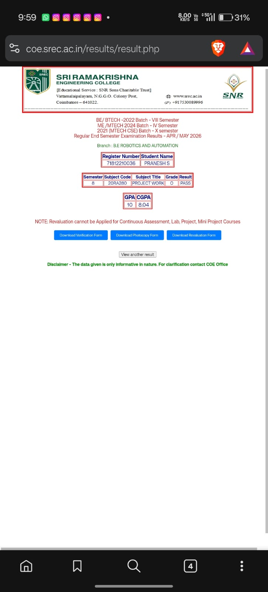

Associate Robotics Engineer with expertise in Autonomous Mobile Robots, ROS 2, Computer Vision, and Industrial Automation. Building scalable robotic systems for warehouse automation, logistics, and Industry 4.0.

I'm an Associate Robotics Engineer at Goat Robotics, developing ROS 2 based autonomous robotic applications. I design navigation and localization algorithms for mobile robots and integrate sensors, computer vision modules, and embedded controllers.
B.E. Robotics & Automation graduate from Sri Ramakrishna Engineering College (CGPA: 8.04/10). Published IEEE research on QR Code Based Indoor Navigation achieving 98.5% detection accuracy. Won "The Best Startup Award" at SREC INNOVATE24.
Skilled in Python, C++, ROS 2, OpenCV, Raspberry Pi, ESP32, and SolidWorks. Passionate about building scalable robotic systems for warehouse automation, logistics, and smart manufacturing.
Final year project: intelligent indoor navigation using floor-mounted QR codes. 98.5% detection accuracy, 95%+ navigation success. Published in IEEE.
Designed maze-solving and autonomous path planning algorithms for TurtleBot3 using ROS2 simulation.
Autonomous docking solution for robots using ROS2, enabling precise positioning and self-recharging capabilities.
Smart waste management system that separates recyclables based on an AI audio classification model.
Innovative robotic solution addressing environmental issues by removing invasive water hyacinth from water bodies.
Designed and developed a robotic system for industrial pick-and-place operations using SolidWorks and automation.
Smart monitoring system for rainfall detection using sensor technology, providing real-time alerts.
Develop ROS 2 based autonomous robotic applications. Design navigation and localization algorithms for mobile robots. Integrate sensors, computer vision modules, and embedded controllers. Debug and optimize robotic software performance.
Developed ROS simulation projects and robotic automation solutions. Optimized robot performance for industrial robotics applications.
Developed a ROS auto-docking solution for autonomous charging alignment. Implemented autonomous navigation workflows within the ROS ecosystem.
Handled robot design, motion planning, automation workflow, mechanical integration, and industrial testing for an industrial pick-and-place robot.
Coimbatore, Tamil Nadu. Comprehensive engineering degree focused on robotics, automation, and intelligent systems.
Won "The Best Startup Award" for innovative robotics project at SREC INOVATE24.
Participated in India's biggest hackathon, working on innovative tech solutions.
Three-day national level workshop on SLAM Navigation & Autonomous Map Building.
Certified in Python for Data Science from Infosys Springboard.
Hands-on workshop on advanced robotics technologies and applications.
Introduction to Industry 4.0 and Industrial Internet of Things (IIoT).
Certified for social innovation contributions in the Industry 4.0 domain.
Completed AI for India 2.0 certification program by GUVI.